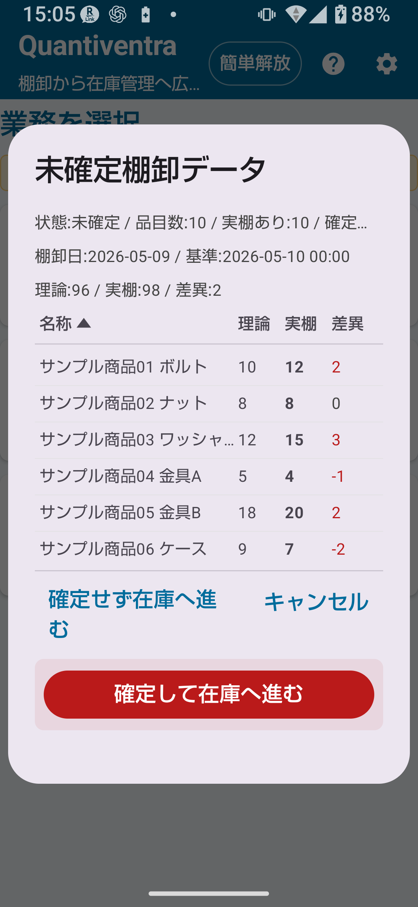

第1章
フル版（フル解放）の概要
棚卸 フル解放では、件数制限の解除に加えて、共通フル設定（コードルール・ロケーションルール・カメラ設定・CSV拡張など）が使えます。
大量商品の管理や詳細ロケーション運用に対応した棚卸が可能になります。
フル版でできる棚卸機能の一覧
✅ フル解放で追加・解除される機能
- マスタ件数・棚卸履歴件数・エクスポート件数の上限解除
- コードルール設定（詳細）
- ロケーションコードルール設定
- カメラ読み取り設定（詳細）
- CSV出力拡張
- 詳細編集
- 画面回転固定（簡単解放から引き続き利用可能）

第2章
簡単版との差分
| 機能・設定 | 簡単版 | フル版 |
|---|---|---|
| マスタ件数 | 300件まで | 上限解除 |
| 棚卸履歴件数 | 1,000件まで | 上限解除 |
| エクスポート件数 | 300件まで | 上限解除 |
| 詳細コードルール設定 | ✗ | ○ |
| ロケーションコードルール設定 | ✗ | ○ |
| カメラ詳細設定 | ✗ | ○ |
| CSV拡張出力 | ✗ | ○ |
| 詳細ロケーション使用 | ✗（詳細モードは設定可能だが機能制限あり） | ○ |
第3章
詳細ロケーション
フル解放では、ロケーションマスタに登録したすべての場所を棚卸で使えます。倉庫・店舗以外に、棚番号・フロア・エリアなどを細かく設定できます。
詳細ロケーションを使うための設定
- 「設定 → 棚卸設定」で「詳細」モードを選択する。
- 「マスタ管理 → ロケーションマスタ」で必要なロケーションを登録する。
- 棚卸画面でロケーションを選ぶと、登録済みのすべてのロケーションが候補に表示される。
⚠ 注意
フル解放済みでも、設定が簡単A/B/Cのままでは簡単ロケーション表示のままです。「詳細」モードへ切り替えることで詳細ロケーションが使えます。
💡 ヒント
詳細ロケーションが登録されているのに簡単モードのままで作業をした場合、アプリが「詳細設定にすれば他のロケーションも使えます」と案内する場合があります。
第4章
CSV入出力の拡張
フル解放では、棚卸CSV入出力の拡張機能が使えます。
棚卸CSV取込仕様（フル版）
| CSV種別 | 用途 | 主な列 | 必須/任意 | 注意点 | 使えるプラン |
|---|---|---|---|---|---|
| 棚卸CSV（2列） | 基本的な棚卸マスタ取込 | 品番、商品名 | 必須2列 | ヘッダーなし、1行目からデータ | 全プラン |
| 棚卸CSV（3列） | 理論在庫付き棚卸マスタ取込 | 品番、商品名、理論在庫 | 必須3列 | 実棚は取込時不要（0から開始） | 全プラン |
棚卸CSV出力（フル版）
- エクスポートは1行目に言語別ヘッダーを付けて出力する。
stocktake_summary（棚卸合計CSV）に日付・時刻・ロケーション列は含まれない。- ロケーション別・棚別・日別・明細の詳細出力を行う場合は、アプリ画面の案内と出力されたCSVの内容を確認してください。
🚨 重要
CSV取込・出力操作はデータを大きく変更する場合があります。操作前に必ずバックアップを取ってください。
第5章
棚卸履歴
フル解放では棚卸履歴の件数上限が解除されます。過去の棚卸データを長期間保存・確認できます。

棚卸履歴で確認できること
- 保存日時・商品コード・商品名
- 実棚数量・ロケーション
- メモ
- 確定状態（未確定/確定済み）
第6章
実棚確定の流れ
棚卸では、入力した棚卸データを「実棚確定」する操作があります。確定することで棚卸結果が正式な記録として扱われます。
棚卸から確定までの流れ
① 棚卸入力：バーコード読み取り → 数量入力 → 保存
↓
② 棚卸履歴確認：保存内容を確認し、必要に応じて画面の案内に従って修正または再入力する
↓
③ 実棚確定：棚卸結果を確定する操作を行う
↓
④ 在庫管理への反映（任意）：確定した棚卸結果を在庫管理へ反映する
🚨 実棚確定ボタンについて
実棚確定は在庫データに影響する重要操作です。確定ボタンは確認内容の下にある危険操作エリアに分離され、最初に押す主ボタンとしては扱われません。差異や対象データを確認したうえで、最後に押してください。
🔍 実棚確定後の扱い
確定後に修正や取り消しが必要になった場合は、アプリ画面に表示される案内を優先してください。確定前に内容確認とバックアップを行い、慎重に操作してください。
🚨 重要
実棚確定前に棚卸履歴の内容を必ず確認してください。確認画面の指示をよく読んでから操作してください。
第7章
在庫管理への反映
棚卸結果を在庫管理へ反映すると、在庫数量が実棚確定した数量に調整されます。差異は調整履歴として記録されます。
在庫反映の手順（概要）
- 棚卸データを入力し、実棚確定を行う。
- 在庫管理への反映操作を実行する。
- 反映内容（差異調整の内容）を確認画面で確認する。
- 確認後、反映を実行する。
- 在庫履歴で差異調整の内容を確認する。
🚨 重要
在庫反映操作は在庫数量を大きく変更します。反映前に必ずバックアップCSVを取得してください。また、反映内容の確認画面をよく読んでから実行してください。
🔍 反映後の扱い
棚卸反映後に修正や取り消しが必要になった場合は、アプリ画面の案内、在庫履歴、バックアップCSVを確認してください。
第8章
在庫反映時の注意事項
🚨 反映前に必ずバックアップ
在庫管理への反映はデータを大きく変更します。必ず事前にバックアップCSVを出力してください（設定→全データエクスポート）。
⚠ 確認画面をよく読む
実棚確定・在庫反映・削除などデータが変わる操作は、確認画面をよく読んでから実行してください。
⚠ 課金・購入条件の確認
法務・購入条件はGoogle Play Storeの表示で確認してください。取扱説明書では断定しません。
第9章
フル版向け業務運用例
月次棚卸の運用例
- 月初に棚卸CSVをインポートして商品マスタを最新化する（商品マスタ情報として取込）。
- 棚卸設定を「詳細」モードに設定し、棚別・エリア別のロケーションを準備する。
- 棚卸作業：バーコードを読み取りながら実棚数量を入力・保存する。
- 棚卸履歴でデータを全件確認する。
- 問題がなければ実棚確定を行う。
- 在庫管理への反映を実行する（バックアップ取得後）。
- 在庫履歴で差異調整の内容を確認し、差異があれば原因を調査する。
- 棚卸結果CSVをエクスポートして記録保存する。
📌 この章のポイント
- フル解放では件数制限解除に加え、詳細ロケーション・CSV拡張が使える。
- 詳細ロケーションを使うには「設定 → 棚卸設定」で「詳細」モードへ切り替える必要がある。
- 実棚確定 → 在庫反映の流れは、データを大きく変えるため慎重に行う。
- 在庫反映前には必ずバックアップCSVを取得する。
🔍 ご利用前の確認事項
- 実棚確定後に修正が必要になった場合は、アプリ画面の案内と棚卸履歴を確認する
- 棚卸反映後は在庫履歴とバックアップCSVで反映内容を確認する
- ロケーション別・日別・明細の詳細CSV出力は、出力画面と出力ファイルの内容を確認して利用する
- 棚卸データを修正する場合は、保存済み履歴・確定状態・画面表示を確認してから操作する
- 詳細ロケーション画面は、アプリ内の最新表示を確認してください。